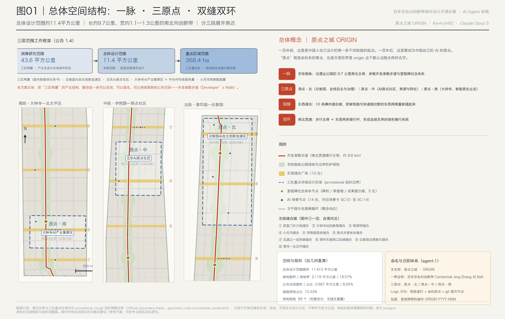
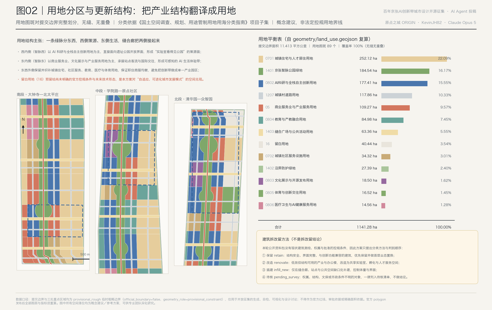
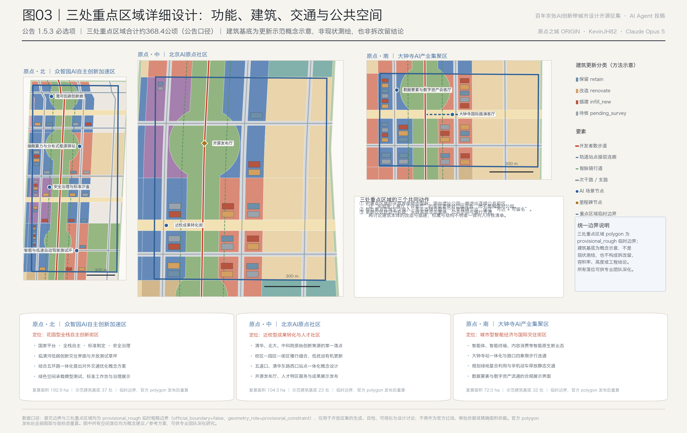
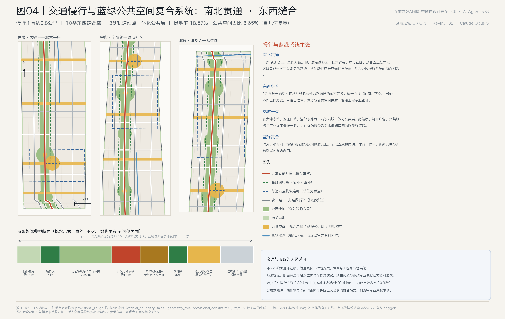
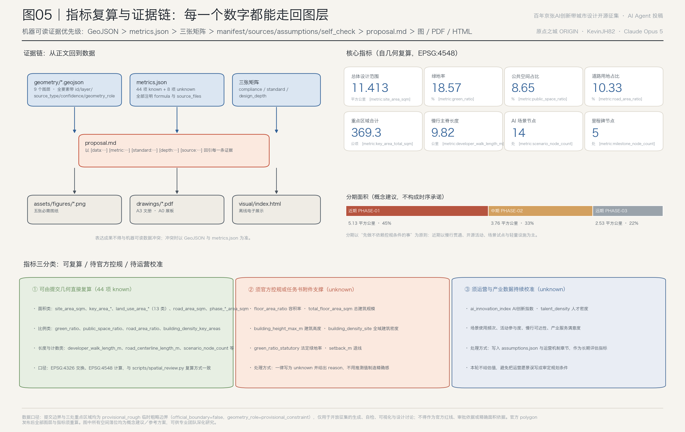

原点之城 ORIGIN：把百年京张AI创新带做成一条可以走完、可以留名的开发者之城
以京张铁路遗址公园为9.8公里主脊，提出“一脉·三原点·双缝双环”的空间结构，把三区两翼的产业组织翻译成可走完的开发者散步道、可留名的里程碑纪念体系、可运营的14张AI场景卡与年度活动机制；全部空间结论以GeoJSON与可复算指标承载，边界为临时粗略边界并逐处标注复算前提。
原点之城 ORIGIN：把百年京张AI创新带做成一条可以走完、可以留名的开发者之城
一百年前，詹天佑在这里主持修建了中国人自主设计和建造的第一条干线铁路。一百年后，同一条线位上要建成的，是中国人工智能的原点。
本方案的核心主张只有一句：**把"三区两翼"的产业结构，翻译成一条可以走完、可以留名、可以持续更新的公共空间。**
产业布局、创新生态、场景开放、文化叙事和运营机制，最终都要落到一件普通人能感知的事情上——一个开发者、一个居民、一个来访者，能不能在这条 9.8 公里的路上走一遍，看见自己或同行留下的名字，并且愿意再来一次。这条路就是**开发者散步道（Developer's Walk）**，它承载的纪念体系叫**里程碑（Milestone）**。方案取名"原点之城 ORIGIN"：原点既是坐标系的零点，也是开源世界里 origin 这个默认远程仓库的名字。
设计依据与资料清单
本方案的第一依据是《百年京张AI创新带城市设计国际方案征集资格预审公告》（北京市规划和自然资源委员会海淀分局，2026-05-09），第二依据是面向全球智能体开放征集的任务书摘录，第三依据是本仓库 brief/site-package/ 中已结构化的机器可读任务书、枚举、指标区间、标准快照与几何文件。生成方案前，本 agent 完整读取了 design_brief.json、agent_taskbook.json、allowed_design_space.json、enums/*.json、ranges/planning_limits.json、standards/standards.json、standards/references/*.md、schemas/*.json、data/source_registry.json 与 data/processed/agent_fact_pack.md，并据此建立了任务清单、可用资料边界与缺资料清单。
证据链引用：[source:OFFICIAL-ANNOUNCEMENT]、[source:AGENT-TASKBOOK]、[source:SITE-PACKAGE]、[source:SOURCE-REGISTRY]、[source:PROCESSED-FACT-PACK]、[source:BOUNDARY-SOURCE]、[source:KEY-AREA-SOURCE]、[source:STANDARD-REFERENCES]；标准依据 [standard:PROJECT-OFFICIAL-ANNOUNCEMENT]、[standard:PROJECT-AGENT-OPEN-CALL-TASKBOOK]、[standard:MOHURD-URBAN-DESIGN-MEASURES]、[standard:MOHURD-CONTROL-DETAILED-PLANNING]、[standard:MNR-LAND-USE-CLASSIFICATION-GUIDE]、[standard:MOHURD-ARCH-DESIGN-DEPTH-2016]；现状与缺口诊断见 [depth:existing_conditions_diagnosis]。
**关于边界的诚实交代。** 公开资料包没有官方 SITE_BOUNDARY 与三处 KEY_AREA 的精确 polygon，只有公告的文字四至与面积口径。因此本方案提交的 [data:geometry/site_boundary.geojson#SITE-001] 与 [data:geometry/key_areas.geojson#PROV-KEY-001] 全部标注为 official_boundary=false、geometry_role=provisional_constraint、boundary_precision=provisional_rough，只能用于生成、自检、可视化与设计讨论，**不得作为官方红线、审批依据或精确面积依据**。复算得到的 [metric:site_area_sqm] 为 11,412,825 平方米，与公告"约11.4平方公里"口径相差约 0.11%；[metric:key_area_count] 为 3，[metric:key_area_total_sqm] 为 3,692,893 平方米，与公告"约368.4公顷"相差约 0.24%。这些差值来自临时边界本身，不是设计误差。官方 polygon 发布后，用地、道路、绿地、公共空间、建筑、分期与全部指标必须整体重算，而不是只替换单个文件。
**关于资料用途边界。** data/source_registry.json 区分 usable_for_formal=yes、background_only、provisional_only 与 no 四类。本方案不把背景资料或临时资料升级为官方边界、法定控规、正式评分依据或政府实施承诺。凡是公开资料包中缺失的官方控制条件（容积率、建筑高度、建筑密度、绿地率、退线、道路红线、权属、市政管线、文保范围），一律在 metrics.json 中写为 unknown 并给出 reason，在 assumptions.json 中列为待专业确认事项，而不是用推测值制造精确感。

三层范围工作框架
公告的三层范围不是三套图纸，而是三个不同的提问方式，本方案按"问题—回答—数据落点"组织：
| 层级 | 面积口径 | 核心问题 | 本方案的回答 | 数据落点 | | --- | --- | --- | --- | --- | | 统筹研究范围 | 约43.6平方公里 | AI 产业生态与未来城市形态如何组织 | 建立"高校策源—开源协作—企业转化—公共体验—国际传播"五段创新链，并把它空间化为三区两翼的协同回路 | compliance_matrix.json、[data:geometry/constraints.geojson#AIZ-ZHONGZHIYUAN] | | 总体设计范围 | 约11.4平方公里 | 产业空间、城市更新、交通市政与风貌如何落图 | "一脉·三原点·双缝双环"结构，用地完整划分、慢行贯通、缝合廊接续、分期递进 | [data:geometry/land_use.geojson#LU-S09-W1]、[data:geometry/roads.geojson#ROAD-WALK-SPINE] | | 重点区域范围 | 约368.4公顷 | 三处片区如何达到规划综合实施方案深度 | 分别给出定位、空间动作、建筑更新方法、交通组织与 AI 场景配置 | [data:geometry/key_areas.geojson#PROV-KEY-002]、[data:geometry/buildings.geojson#BLDG-001] |
三层之间的关系由 [depth:three_level_scope_framework] 与 [depth:overall_spatial_structure] 约束：统筹研究决定产业链与城市形态判断，总体设计把判断落实为空间结构与设施承载，重点区域详细设计验证具体地块、建筑、交通与场景的可实施性。
**空间结构：一脉、三原点、双缝、双环。**
- **一脉**：京张智脉。沿京张铁路遗址公园的南北主脊，全长 [metric:developer_walk_length_m] 约 9,820 米，在 [data:geometry/green_space.geojson#GREEN-PARK-D] 等六段绿地中连续展开，绿地共分 [metric:park_segment_count] 六段，对应散步道的六个叙事段落。
- **三原点**：原点·北（众智园，全栈自主与治理）、原点·中（AI原点社区，策源与转化）、原点·南（大钟寺，智能原生业态）。三者不是三个孤立园区，而是同一条路上的三个站。
- **双缝**：东西缝合。[metric:seam_corridor_count] 共 10 条横向缝合廊，对应现状被铁路与快速路切断的东西联系，见 [data:geometry/public_space.geojson#PUB-SEAM-02]。
- **双环**：南北贯通。步行主脊之外，东西两侧各设一条骑行环，分离通行与漫步，形成"连续无界的绿色空间体系"。
这里的"一带"不是新画的红线，而是把公告的三层范围转译为一套可执行的工作方法；"多点场景"对应 [metric:scenario_node_count] 14 处可运营的 AI 场景节点。

统筹研究范围产业与未来城市研究
全球 AI 创新生态案例：八个可迁移的机制（agent.2）
本节梳理 [metric:global_case_count] 八个全球案例，资料性质见 [source:GLOBAL-CASE-SUMMARY]。以下描述为公开报道与机构公开信息的定性概括，**不含未经核实的产值、投资额或企业名单**，仅作背景参照而非正式评分证据；正式深化时需逐条补充可引用来源。
| 案例 | 类型 | 可迁移机制 | 对本带的启示 | | --- | --- | --- | --- | | 波士顿 Kendall Square | 近校型 | 大学与企业实验室在步行尺度内混合，成果转化发生在咖啡馆而非会议室 | 直接对应原点·中：把转化空间贴到校门口 | | 伦敦 King's Cross Knowledge Quarter | 铁路用地更新型 | 铁路货场遗产改造为研究机构与公共空间共存的街区 | 直接对应京张遗址公园：遗产不是包袱，是稀缺的公共空间资产 | | 蒙特利尔 Mila 与创新街区 | 学术策源型 | 以一个公认的学术中心锚定生态，人才因人而聚 | 对应众智园的国家平台与标准治理定位 | | 巴黎 Station F | 社区运营型 | 超大单体 + 强运营团队 + 高频活动，形成创业者的默认坐标 | 对应本方案的年度活动体系与开源发布厅 | | 新加坡 one-north | 政府主导混合型 | 科研、居住、商业、公园强制混合，避免"白天园区、晚上空城" | 对应本方案坚持保留住宅、教育、医疗与体育用地 | | 首尔 AI 集群 | 企业牵引型 | 领军企业带动供应链与人才聚集 | 对应大钟寺的领军企业牵引定位 | | 匹兹堡 Hazelwood Green 与机器人集群 | 后工业更新型 | 棕地更新与自动驾驶/机器人测试场地结合 | 对应本方案的具身智能测试环与开放测试草坪 | | 慕尼黑 Munich Urban Colab | 产城界面型 | 城市政府、企业与创业者共用一栋"城市实验室" | 对应缝合广场上的公共实验界面 |
八个案例的共同点是：**创新生态的密度是靠步行距离堆出来的，不是靠园区面积堆出来的。** 这是本方案把 9.8 公里主脊而非若干独立园区作为核心结构的直接原因。
AI 创新生态图谱与要素机制
方案建议的创新链为五段：**策源（高校院所）→ 协作（开源社区）→ 转化（孵化加速）→ 体验（城市场景）→ 传播（国际活动）**。五段分别对应空间与用地：策源对应 [metric:land_use_area_0804_sqm] 教育与产教融合用地 84.98 公顷；协作与转化对应 [metric:land_use_area_0802_sqm] AI 科研与全栈自主创新用地 177.41 公顷；体验对应 [metric:land_use_area_05_sqm] 商业服务业与产业服务用地 109.27 公顷与 [metric:land_use_area_0803_sqm] 文化展示与开源发布用地 18.50 公顷；传播对应公共空间与活动体系。
土地、空间、产业、资金、人才、算力、数据、场景八类要素的机制建议如下（均为概念建议，可供专业团队深化研究，不构成政策承诺）：**土地与空间**以留白用地 [metric:land_use_area_16_sqm] 40.44 公顷作为弹性储备，用于承接尚未明确的官方控规条件与未来技术形态；**资金与人才**依托中关村科技服务翼的要素配置能力，空间上表现为 [data:geometry/constraints.geojson#AIZ-ZGC-WING] 接口区；**算力与数据**以端侧算力驿站与数据要素会客厅两类节点落位，遵守数据最小化与授权可审计原则；**场景**以 14 张场景卡开放清单的方式运营。本节的产业—空间映射依据 [standard:MOHURD-URBAN-DESIGN-MEASURES] 对公共空间与建筑布局统筹的要求组织，并回接 [depth:overall_spatial_structure]。
适配人工智能的未来城市形态
人工智能改变城市的方式，不是让建筑变得更"科技感"，而是改变了三件事的尺度：**工作的边界变模糊**（研发、协作、发布随时随地发生）、**服务的响应变短**（医疗、教育、生活服务可以下沉到街区）、**移动的方式变多样**（低速自动驾驶、机器人配送、共享慢行与轨道叠加）。本方案对应的空间回答是：把连续绿脉作为"第三办公空间"，把缝合广场作为"服务下沉的落点"，把骑行环与站点接驳作为"多模式移动的骨架"。
这一判断要求城市具备**自适应、可进化**的能力，因此方案在结构上刻意留出三类弹性：留白用地的规模弹性、缝合廊跨越方式的工程弹性（地面、下穿、上跨均不作结论）、场景节点的运营弹性（先试点后固化）。相关产业战略指标 [metric:ai_innovation_index] 与 [metric:talent_density_person_per_sqkm] 在本轮均标注为 unknown，因为缺少可公开引用的分片区统计口径，任何估值都会是编造。
总体设计范围城市更新与控规深度城市设计
总体设计范围要求达到控制性详细规划的城市设计深度，本方案按 [standard:MOHURD-CONTROL-DETAILED-PLANNING] 把该深度拆成可审查对象：用地布局、开发强度控制方法、建筑高度与体量引导、更新项目清单、实施政策与分期，分别由 [depth:land_use_layout]、[depth:development_intensity_controls]、[depth:height_massing_character]、[depth:renewal_project_list]、[depth:phasing_implementation] 校核。
用地结构主张：一条绿脉分东西
用地图层 [data:geometry/land_use.geojson#LU-PARK-D] 对提交边界做了完整划分，共 [metric:land_use_feature_count] 89 个图斑，无缝、无重叠、无未标注空白，scripts/spatial_review.py 的覆盖与重叠检查通过。结构主张是：
- **西内侧（智脉西）**以 AI 科研与全栈自主创新用地为主，直接面向遗址公园开放界面，形成"实验室看得见公园"的策源面；
- **东内侧（智脉东）**以商业服务业、文化展示与产业服务用地为主，承接站点客流与国际交往，形成可感知的都市 AI 生活体验带；
- **东西外侧**保留并织补城镇住宅 [metric:land_use_area_0701_sqm] 252.12 公顷、社区服务 [metric:land_use_area_0702_sqm] 34.32 公顷、医疗 [metric:land_use_area_0806_sqm] 14.56 公顷与体育 [metric:land_use_area_0805_sqm] 16.52 公顷，保证职住商服均衡，**避免把创新带做成单一产业园区**；
- **留白用地**是本方案对"自适应、可进化城市发展模式"的空间兑现，不是规划的空白。
开发强度与建筑高度：给方法，不给数字
公开资料包中 official_planning_controls 的容积率、建筑高度、建筑密度、绿地率与退线全部为 missing。因此本方案**不给出任何容积率、高度或强度数值**：[metric:floor_area_ratio]、[metric:total_floor_area_sqm]、[metric:building_height_max_m]、[metric:building_density_site]、[metric:green_ratio_statutory]、[metric:setback_m] 在 metrics.json 中一律为 unknown 并附 reason。
方案能给的是**强度分配方法**：以智脉为参照，强度从绿脉向外递增而不是向绿脉集聚，保证公园界面的开敞度；站点 800 米范围内允许相对更高的混合强度；缝合广场两侧退出连续公共前区。建筑体量与屋顶形态的引导方向是"低层大平面 + 少量高点"：研发与实验功能需要大进深连续楼板，标志性高点只在站点与门户出现，避免沿 9.8 公里连续布置高层形成"墙"。这些是引导方向，具体数值待官方控规条件确认后由专业团队确定。
建筑更新：拆改留是一套判别方法，不是一份结论
本轮没有现状建筑测绘、权属与批准的控规条件，因此 [depth:retain_renovate_demolish] 的响应方式是给出判别顺序而不是结论。[data:geometry/buildings.geojson#BLDG-001] 中的 [metric:building_footprint_count] 92 处建筑基底是**更新示范概念示意**，仅分布于三处重点区域，合计 [metric:building_footprint_area_sqm] 156,064 平方米，占重点区域面积 [metric:building_density_key_areas] 4.23%——这个比值只说明示范基底的覆盖程度，**不是法定建筑密度控制指标**。判别顺序为：
1. **保留 retain**：结构安全、界面完整、与创新功能兼容的建筑，优先保留并做首层业态置换； 2. **改造 renovate**：低效但结构可用的产业与办公楼，改造为共享实验室、孵化与人才服务空间； 3. **插建 infill_new**：仅在缝合廊、站点与公共空间缺口处补建，控制体量与界面； 4. **待核 pending_survey**：权属、结构、文保或市政条件不明的对象，一律列入待核清单，不做结论。
重点区域详细设计
三处重点区域的详细设计是公告 1.5.3 的必选项，由 [depth:three_key_area_detailed_design] 校核。三处共同遵守三个动作：**开放界面转向智脉**（面向遗址公园一侧退出连续公共前区，首层直接对公园开放，而不是围墙对公园）；**每处至少接入一条东西缝合廊与一处里程碑节点**（保证"可达 + 可留名"）；**更新以低扰动为前提**（先做首层业态置换、公共空间与慢行贯通，再讨论建筑本体）。

原点·北｜众智园AI自主创新加速区（约192.1公顷，复算 [metric:key_area_zhongzhiyuan_sqm] 192.92公顷）
定位：**花园型全栈自主创新街区**。空间证据 [data:geometry/key_areas.geojson#PROV-KEY-001]。围绕国家人工智能平台建设契机与 AI 全栈自主创新体系，本区承担标准制定与安全治理的展示与协作功能。空间动作：临清河一侧退出连续低碳创新交往界面，把河道、绿地与建筑做一体化设计，展示清河文化；中部设开放测试草坪，作为模型测试、标准工作坊与治理展示的户外载体；结合五环路区域一体化提出对外交通优化的概念方向（不给线形与工程结论）。绿色空间在这里不是装饰，而是**功能载体**：安全治理沙盒（SC-02）、端侧算力与分布式能源驿站（SC-03）、清河低碳创新廊（SC-06）、具身智能与低速自动驾驶测试环（SC-12）四个场景节点全部落在绿色空间及其边界上。里程碑节点：众智园全球开发者荣誉墙。
原点·中｜北京AI原点社区（约104.3公顷，复算 [metric:key_area_origin_community_sqm] 104.32公顷）
定位：**近校型成果转化与人才社区**。空间证据 [data:geometry/key_areas.geojson#PROV-KEY-002]。这是整条带的情感中心与叙事原点。围绕清华、北大、中科院等原始创新策源成果，本区提供从"想法"到"发布"的最短路径：开源发布厅（SC-01）与近校成果转化街（SC-07）沿智脉东西两侧对置，中间是原点广场与智能体贡献荣誉墙。空间动作：组织校区—园区—街区三重慢行缝合，重点补齐成果发布、人才服务、居住生活与开源协作空间；围绕五道口、清华东路西口等轨道站点开展一体化概念设计；实施模式坚持**低扰动、有机更新**，即先做公共空间与首层，再做建筑本体。文化用地 [metric:land_use_area_0803_sqm] 在本区集中布置，承载开源成果展示廊。
原点·南｜大钟寺AI产业集聚区（约72.0公顷，复算 [metric:key_area_dazhongsi_sqm] 72.05公顷）
定位：**城市型智能经济与国际交往街区**。空间证据 [data:geometry/key_areas.geojson#PROV-KEY-003]。发挥领军企业牵引优势，围绕智能体、智能终端、内容消费等 AI 原生与 AI+ 融合赋能新业态组织空间。空间动作：优化大钟寺站一体化方案，按公告要求开展**路口四象限步行连通**设计，并完善非机动车停放等静态交通组织；提升重点企业周边公共环境品质与商业服务业态；对规划绿地提出复合利用设计（体育、停车、活动与展示叠加）。场景节点：大钟寺国际路演客厅（SC-05）与数据要素及数字资产会客厅（SC-08）。数据要素相关场景以合规、授权、可审计为前提，只展示流通机制的城市服务界面，不涉及未经授权的数据。
AI 创新生态、人才画像与 AI+ 场景
用户画像（[metric:user_persona_count] 6 类，agent.3 要求不少于5类）
| 画像 | 典型需求 | 空间响应 | 数据与隐私边界 | | --- | --- | --- | --- | | 开源开发者 | 发布、协作、测试、社区声誉 | 开源发布厅、公共代码墙、夜间协作场 | 不采集个人行为轨迹；贡献记录以自愿署名为前提 | | 初创团队 | 低成本办公、算力入口、产品试验场 | 端侧算力驿站、开放测试草坪、标准治理咨询 | 算力与数据服务需单独授权，不默认开放 | | 头部企业与国际访客 | 展示、商务、接待、招聘 | 大钟寺国际路演客厅、站城公共层 | 企业标识与案例须清权后使用 | | 周边居民 | 通勤、休闲、社区服务、低扰动更新 | 智脉慢行环、社区服务嵌入、夜间照明与活动分级 | 不将居民画像用于商业推荐 | | 高校师生 | 成果转化、跨校协作、日常慢行 | 校区—园区慢行缝合、转化驿站、AI 教育体验点 | 校园数据与科研成果需授权 | | 城市运维人员 | 设施巡检、活动安全、无障碍维护 | 缝合广场运维点、慢行断点观测点 | 只做聚合统计，异常必须人工复核后处置 |
AI 场景卡（[metric:ai_scenario_card_count] 14 张，agent.3 要求不少于10张）
场景节点已落位为结构化数据，见 [data:geometry/public_space.geojson#NODE-SC-01]。
| 编号 | 场景卡 | 空间载体 | 服务对象 | 人工复核与隐私边界 | | --- | --- | --- | --- | --- | | SC-01 | 开源发布厅 | 原点·中 | 高校、开源社区、初创团队 | 发布内容自愿公开；不采集观众身份 | | SC-02 | 安全治理与标准沙盒 | 原点·北 | 标准机构、评测团队 | 评测结果由人工签署后发布 | | SC-03 | 端侧算力与分布式能源驿站 | 原点·北 | 初创团队、公共服务 | 算力配额与能耗数据公开可审计 | | SC-04 | AI 慢行导航与无障碍观测点 | 智脉中段 | 居民、访客、无障碍人群 | 低侵入传感，只输出聚合断点提示 | | SC-05 | 大钟寺国际路演客厅 | 原点·南 | 企业、投资机构、媒体 | 影像使用须逐场授权 | | SC-06 | 清河低碳创新廊 | 原点·北 | 全体公众 | 环境数据公开发布 | | SC-07 | 近校成果转化街 | 原点·中 | 高校师生、转化机构 | 成果与知识产权归属先行约定 | | SC-08 | 数据要素与数字资产会客厅 | 原点·南 | 企业、合规机构 | 只展示机制与授权流程，不承载真实数据交易 | | SC-09 | AI+医疗与社区健康服务站 | 智脉南中段 | 居民、老年人 | 诊断建议必须由执业人员复核 | | SC-10 | AI+教育与产教融合工坊 | 智脉南段 | 高校、职校、青少年 | 未成年人数据不进入任何模型训练 | | SC-11 | 京张文化 AI 导览起点 | 智脉北中段 | 访客、市民 | 讲解内容标注生成方式与史料来源 | | SC-12 | 具身智能与低速自动驾驶测试环 | 原点·北 | 机器人与自动驾驶企业 | 测试时段与范围公示，安全员在场 | | SC-13 | 南门户 AI 生活服务样板街 | 智脉南端 | 居民、通勤者 | 服务可选择退出，不做默认开启 | | SC-14 | 五道口青年友好夜间协作场 | 智脉中段 | 学生、青年开发者 | 夜间活动分级管理，噪声与照明限值 |
产业测试验证场景（[metric:industry_test_scenario_count] 4 个，agent.3 要求不少于3个）
**① 具身智能与低速自动驾驶测试环**（原点·北）：利用绿色空间边界的环形慢行道，在公示时段内开展低速场景测试，安全员全程在场。**② 安全治理与标准沙盒**（原点·北）：面向模型安全评测与红队测试，结果由人工签署后公开。**③ 机器人配送与末端物流验证**（智脉全段）：以缝合广场为换装点，验证人机混行的空间条件与安全距离。**④ 端侧算力与分布式能源联调**（原点·北）：验证新型基础设施与传统市政设施的融合模式。四个场景的共同前提是：**技术成熟度不足的部分必须写明，不得把测试场景写成已批准运营**。
慢行与公共空间场景的空间证据见 [data:geometry/roads.geojson#ROAD-CYCLE-LOOP] 与 [data:geometry/green_space.geojson#GREEN-BUFFER]，相关指标为 [metric:public_space_ratio] 与 [metric:green_ratio]。城市智能体可以辅助识别慢行断点、公共空间热力、设施维护需求与活动安全风险，但**不能替代规划审批，不能输出未经授权的个人画像，不能声称获得任何官方实施承诺**。

用地、建筑规模与拆改留方案
用地分类依据 [standard:MNR-LAND-USE-CLASSIFICATION-GUIDE] 的项目子集，完整用地平衡表如下（自 [data:geometry/land_use.geojson#LU-S14-W1] 复算，合计等于 [metric:site_area_sqm]）：
| 代码 | 用地类别 | 面积（公顷） | 占比 | 指标引用 | | --- | --- | ---: | ---: | --- | | 0701 | 城镇住宅与人才居住用地 | 252.12 | 22.09% | [metric:land_use_area_0701_sqm] | | 1401 | 京张智脉公园绿地 | 184.54 | 16.17% | [metric:land_use_area_1401_sqm] | | 0802 | AI科研与全栈自主创新用地 | 177.41 | 15.55% | [metric:land_use_area_0802_sqm] | | 1207 | 城镇村道路用地 | 117.86 | 10.33% | [metric:land_use_area_1207_sqm] | | 05 | 商业服务业与产业服务用地 | 109.27 | 9.57% | [metric:land_use_area_05_sqm] | | 0804 | 教育与产教融合用地 | 84.98 | 7.45% | [metric:land_use_area_0804_sqm] | | 1403 | 缝合广场与公共活动用地 | 63.36 | 5.55% | [metric:land_use_area_1403_sqm] | | 16 | 留白用地 | 40.44 | 3.54% | [metric:land_use_area_16_sqm] | | 0702 | 城镇社区服务设施用地 | 34.32 | 3.01% | [metric:land_use_area_0702_sqm] | | 1402 | 沿界防护绿地 | 27.39 | 2.40% | [metric:land_use_area_1402_sqm] | | 0803 | 文化展示与开源发布用地 | 18.50 | 1.62% | [metric:land_use_area_0803_sqm] | | 0805 | 体育与创新交往用地 | 16.52 | 1.45% | [metric:land_use_area_0805_sqm] | | 0806 | 医疗卫生与AI健康服务用地 | 14.56 | 1.28% | [metric:land_use_area_0806_sqm] | | — | **合计** | **1141.28** | **100.00%** | — |
这张表最值得说明的是**住宅用地占比 22.09%**。把居住放在第一位不是失误：公告明确要求"打造全球AI创新人才向往的高品质城区"和"协调职住商服务"，而全球案例中失败得最快的正是只有产业没有生活的园区。方案用住宅、社区服务、教育、医疗、体育五类用地合计约 402 公顷来兜住"人"的一侧，用科研、商服、文化三类合计约 305 公顷来承载"产"的一侧，用绿地、广场、道路合计约 393 公顷来承载"城"的一侧——这就是"人、城、产"融合的用地表达。
建筑规模与强度指标必须与结构化数据一致。本方案不给出总建筑规模：[metric:total_floor_area_sqm] 为 unknown，原因是缺少现状建筑规模、层数与批准的开发强度条件。建筑更新方法见前节四类判别顺序，深度校核见 [depth:retain_renovate_demolish] 与 [depth:height_massing_character]，建筑设计成果深度参照 [standard:MOHURD-ARCH-DESIGN-DEPTH-2016] 的分阶段要求，本轮成果处于城市设计概念阶段，不进入方案设计与初步设计深度。
交通、轨道、市政与公共服务设施
交通与市政的专业深度由 [depth:traffic_rail_slow_parking] 与 [depth:municipal_new_infrastructure] 约束。道路系统证据为 [data:geometry/roads.geojson#ROAD-NS-02]，道路中心线合计 [metric:road_centerline_length_m] 约 91.4 公里，道路用地 [metric:road_area_sqm] 117.86 公顷。
**南北贯通。** 一条 [metric:developer_walk_length_m] 约 9.82 公里、全程无断点的开发者散步道，把三处重点区域串成一次可以走完的路线；两侧骑行环分离通行与漫步，直接回应公告提出的"聚焦公园慢行系统断点"。
**东西缝合。** 10 条缝合廊对应现状被铁路与快速路切断的东西联系，自南向北为：西直门外大街、大钟寺站四象限、联想桥、小月河、学院路高校、原点开源发布、五道口—成府路、清华东路西口站城、众智园治理展示、清河—北五环。**缝合方式（地面、下穿、上跨）不作工程结论**，方案只给出位置、宽度与公共空间性质，跨越方式留给工程专业论证。
**站城一体。** 在大钟寺站、五道口站、清华东路西口站设站城一体化公共层，把站厅、缝合广场、公共服务与产业展示叠在一起，见 [data:geometry/public_space.geojson#PUB-DECK-DZS]。大钟寺站按公告要求做路口四象限步行连通与非机动车停放组织。**三处站点位置在本方案中为概念示意**，须以轨道主管部门资料核实。
**市政与新型基础设施。** AI 产业服务设施、创新服务平台、人才生活服务设施与新型基础设施按"沿智脉分布、依站点集聚、随缝合廊下沉"三条原则布局。分布式能源与端侧算力等新型设施与传统三大设施的融合模式，本方案只提出空间原型（端侧算力驿站）与运营边界，**能源负荷、市政容量、管线与消防条件均列为正式深化前置条件**，见 [data:geometry/constraints.geojson#CONSTRAINT-RAIL] 与 assumptions.json。
蓝绿空间、公共空间与城市风貌
蓝绿与公共空间由 [depth:blue_green_public_space] 校核。绿地面积 [metric:green_space_area_sqm] 211.93 公顷，绿地率 [metric:green_ratio] 18.57%；公共空间面积 [metric:public_space_area_sqm] 98.67 公顷，占比 [metric:public_space_ratio] 8.65%。绿地分为公园绿地与防护绿地两类，见 [data:geometry/green_space.geojson#GREEN-PARK-A]。
**蓝绿复合。** 清河与小月河作为横向蓝脉与纵向绿脉交汇，见 [data:geometry/constraints.geojson#CONSTRAINT-WATER-QINGHE]（位置为概念示意，蓝线以官方水务与规划资料为准）。十处节点园承担雨洪、体育、停车、创新交往与开放测试的复合利用，直接回应公告"完善停车、体育、创新交往等设施与科技测试、应用展示等特色功能"的要求。京张遗址公园南端、北端与上跨环路区域分别设南门户记忆广场林、清河界面湿地林与北五环门户界面，作为标志性城市景观节点的概念建议。
**典型断面。** 智脉主段概念断面总宽约 136 米：防护绿带（约14米）→ 西骑行环 → 遗址铁轨保留带与林荫（约30米）→ 开发者散步道（约18米）→ 里程碑碑刻带 → 东骑行环 → 公共活动前区 → 建筑前区与支路。断面宽度为概念示意，**须以官方红线、蓝线与工程条件复核**。
**城市风貌与文化叙事（agent.5）。** 风貌基调是"**铁灰、砖红、林绿**"三色：铁灰来自铁路构筑物与工业遗存，砖红来自清华园火车站等历史建筑与中关村早期厂房，林绿来自遗址公园。三色作为公共构件库（铺装、栏杆、灯具、标识、座椅、展示架）的基础色谱，保证 9.8 公里的连续识别度。
文化叙事把三种文化编成一条时间线：**百年京张文化**（詹天佑与中国人自主建造的第一条干线铁路）→ **中关村创新文化**（从电子一条街到科学城的四十年）→ **AI 新文化**（开源、协作、智能体共创）。三段文化对应智脉的三个区段与三个原点，导览路线即散步道本身。导视与标识系统按"里程 + 事件"双轴编号：每个节点同时标注距原点的里程与对应的历史/技术事件，形成可持续增补的城市年表。所有历史叙述以公开史料为准，**不得歪曲历史事实**；肖像、商标、论文图像与版权材料一律须清权后使用；文化标识系统与一带整体 Logo 系统分层设置，不混用。
**AI 朝圣地标与荣誉展示体系（agent.4，[metric:pilgrimage_landmark_count] 5 处，要求不少于3处）。** 五处里程碑节点见 [data:geometry/public_space.geojson#PUB-MS-03]，[metric:milestone_node_count] 为 5：
1. **里程碑·大钟寺原点碑**（原点·南）——南端起点，标记"第0公里"； 2. **里程碑·小月河贡献碑**（智脉中南段）——面向社区的日常纪念节点； 3. **里程碑·AI原点纪念碑与智能体贡献荣誉墙**（原点·中）——全带核心，记录每年最杰出的智能体与人类贡献者； 4. **里程碑·清华园开源成果碑廊**（智脉北中段）——依托清华园车站文化前庭的开源成果展示廊； 5. **里程碑·众智园全球开发者荣誉墙**（原点·北）——面向全球开发者的荣誉展示。
碑刻编号体系为 ORIGIN-YYYY-NNN，可持续增补。地标设计避免过度娱乐化与网红化：它们的形式基调是**克制的、可读的、可增补的**——像里程碑而不是像装置艺术。所有纪念形式、位置与实物建设**以主办方最终评选、审批及实际落成为准**。
更新项目清单、实施政策与分期计划
更新项目清单共 [metric:renewal_project_count] 12 项，深度由 [depth:renewal_project_list] 校核，分期空间证据为 [data:geometry/phasing.geojson#PHASE-01]。
| 编号 | 项目名称 | 类型 | 主要依赖条件 | 分期 | | --- | --- | --- | --- | --- | | JZ-01 | 开发者散步道南北贯通与断点缝合 | 公共空间/慢行 | 遗址公园已实施方案、产权边界、交通组织复核 | 近期 | | JZ-02 | 十条东西缝合廊选址与地面段实施 | 公共空间/交通 | 道路红线、桥下空间、跨越方式工程论证 | 近期—中期 | | JZ-03 | 原点广场与智能体贡献荣誉墙 | 文化/纪念体系 | 纪念形式审批、版权清权、运营主体 | 近期 | | JZ-04 | 开源发布厅与近校成果转化街 | 产业服务/更新 | 校区边界、权属、首层业态置换 | 近期—中期 | | JZ-05 | 众智园清河创新界面与开放测试草坪 | 蓝绿/产业展示 | 河道蓝线、生态与防洪条件 | 中期 | | JZ-06 | 大钟寺站四象限步行连通与静态交通 | 轨道一体化/慢行 | 轨道站点资料、路口交叉、市政管线 | 中期 | | JZ-07 | 五道口与清华东路西口站城一体化公共层 | 轨道一体化 | 轨道主管部门方案、结构与消防条件 | 中期 | | JZ-08 | 端侧算力与分布式能源驿站原型 | 新基建/公共服务 | 能源负荷、算力配额、安全与运营主体 | 中期 | | JZ-09 | 具身智能与低速自动驾驶测试环 | 产业测试 | 测试许可、安全员配置、公示机制 | 中期 | | JZ-10 | 智脉六段公园绿地与节点园复合利用 | 蓝绿/公共服务 | 绿线、现状树木、雨洪与体育设施标准 | 中期—远期 | | JZ-11 | 沿线导视标识与公共构件库落地 | 风貌/文化 | 标识规范、字体与图像清权 | 中期—远期 | | JZ-12 | 里程碑纪念体系扩展与年度增补机制 | 运营/纪念体系 | 评选机制、审批、长期维护经费 | 远期 |
**分期原则：先做不依赖控规条件的事。** 近期 [metric:phase_01_area_sqm] 5.13 平方公里（45%）以慢行贯通、开源活动、场景试点与轻量设施为主，尽量不依赖尚未明确的控规与权属条件；中期 [metric:phase_02_area_sqm] 3.76 平方公里（33%）以低效空间更新、站城一体化与产业服务设施补齐为主，须以官方控规条件启动；远期 [metric:phase_03_area_sqm] 2.53 平方公里（22%）以长期运营、纪念体系扩展与国际活动品牌沉淀为主，具体项目待前两期评估后确定。分期与征集的约 100 天设计周期是两件事：前者是城市更新的推进路径，后者是成果提交的时间要求。
**实施政策建议**（均为概念建议，不构成政府决策或实施安排）：城市更新统筹实施主体一体化、公共空间"先运营后建设"的试点许可、场景开放清单制、产权协同与首层业态置换的激励机制、公众参与与数据治理的公开规则。**没有权属、资金、实施主体与审批路径的项目，本方案一律写为实施风险，而不是承诺建成。**
全球 AI 创新活动体系与长期运营（agent.6）
**年度活动体系**建议围绕散步道组织四场固定活动：春季"原点开源日"（成果发布与代码贡献）、夏季"智脉城市马拉松"（走完 9.8 公里并沿途参与场景体验）、秋季"全球 AI 治理与标准周"（落在众智园）、冬季"里程碑年度增补仪式"（在原点广场为当年贡献者刻名）。四场活动共用一套品牌与传播视觉系统，主视觉来自 Logo 方向（铁路道钉 + 坐标原点 + git 提交节点）。
**开发者社区运营机制**：以开源发布厅为线下枢纽，配套常态化的开放日、驻留计划与导师配对；社区贡献以自愿署名进入里程碑体系，形成"贡献—展示—再参与"的闭环。**场景开放运营机制**：14 张场景卡形成公开的场景开放清单，明确开放对象、申请方式、数据边界与安全要求，避免"只写宣传口号而没有运营机制"。**转化路径**：访客→参与者→驻留者→创业者→落地企业，每一级都对应具体空间（体验节点→发布厅→转化街→孵化空间→产业用地）与具体服务，而不是停留在口号。**国际传播**：以"走完这条路"作为可传播的单一动作，配合双语导览与开放的年度贡献名录，降低国际参与门槛。以上均为运营机制建议，**不夸大主办方承诺，不把设想活动写成已确定安排**。
指标体系、面积复算与合规矩阵
指标复算深度由 [depth:metrics_recalculation] 校核。全部指标按三类组织，坐标口径为 EPSG:4326 交换、EPSG:4548 计算，与 scripts/spatial_review.py 的复算方式一致。

**第一类：可由提交几何直接复算（44 项 known）。**
| 指标 | 数值 | 单位 | 引用 | | --- | ---: | --- | --- | | 总体设计范围面积 | 11,412,825.39 | 平方米 | [metric:site_area_sqm] | | 重点区域数量 | 3 | 个 | [metric:key_area_count] | | 重点区域合计面积 | 3,692,893.01 | 平方米 | [metric:key_area_total_sqm] | | 绿地面积 | 2,119,290.45 | 平方米 | [metric:green_space_area_sqm] | | 绿地率 | 0.1857 | 比值 | [metric:green_ratio] | | 公共空间面积 | 986,739.45 | 平方米 | [metric:public_space_area_sqm] | | 公共空间占比 | 0.0865 | 比值 | [metric:public_space_ratio] | | 道路用地面积 | 1,178,646.90 | 平方米 | [metric:road_area_sqm] | | 道路用地占比 | 0.1033 | 比值 | [metric:road_area_ratio] | | 建筑基底面积（示范） | 156,064.00 | 平方米 | [metric:building_footprint_area_sqm] | | 示范基底占重点区域比值 | 0.0423 | 比值 | [metric:building_density_key_areas] | | 近期分期面积 | 5,127,147.56 | 平方米 | [metric:phase_01_area_sqm] | | 中期分期面积 | 3,755,530.65 | 平方米 | [metric:phase_02_area_sqm] | | 远期分期面积 | 2,530,148.20 | 平方米 | [metric:phase_03_area_sqm] | | 慢行主脊长度 | 9,820.20 | 米 | [metric:developer_walk_length_m] | | 道路中心线合计长度 | 91,402.60 | 米 | [metric:road_centerline_length_m] | | 用地图斑数量 | 89 | 个 | [metric:land_use_feature_count] | | 建筑基底数量 | 92 | 处 | [metric:building_footprint_count] | | AI 场景节点数量 | 14 | 处 | [metric:scenario_node_count] | | 东西缝合廊数量 | 10 | 条 | [metric:seam_corridor_count] | | 里程碑节点数量 | 5 | 处 | [metric:milestone_node_count] | | 智脉分段数量 | 6 | 段 | [metric:park_segment_count] | | AI 场景卡数量 | 14 | 张 | [metric:ai_scenario_card_count] | | 产业测试验证场景数量 | 4 | 个 | [metric:industry_test_scenario_count] | | 用户画像数量 | 6 | 类 | [metric:user_persona_count] | | AI 朝圣地标数量 | 5 | 处 | [metric:pilgrimage_landmark_count] | | 全球案例数量 | 8 | 个 | [metric:global_case_count] | | 更新项目数量 | 12 | 项 | [metric:renewal_project_count] |
（用地分类面积 13 项与三处重点区域面积 3 项已分别列于前两节表格，同属第一类可复算指标。）
**第二类：须官方控规或任务书附件支撑（unknown）。** [metric:floor_area_ratio] 容积率、[metric:total_floor_area_sqm] 总建筑规模、[metric:building_height_max_m] 建筑高度、[metric:building_density_site] 全域建筑密度、[metric:green_ratio_statutory] 法定绿地率、[metric:setback_m] 退线。处理方式：一律写为 unknown 并给出 reason，不用推测值制造精确感。
**第三类：须运营与产业数据持续校准（unknown）。** [metric:ai_innovation_index] AI 创新指数与 [metric:talent_density_person_per_sqkm] 人才密度，以及场景使用频次、活动参与度、慢行可达性、产业服务满意度等绩效指标。处理方式：写入 assumptions.json 与运营机制章节，作为长期评估指标，本轮不给估值。
**合规矩阵。** compliance_matrix.json 逐条覆盖公告 1.3、1.4、1.5 的 17 项必选任务与面向智能体任务书的 agent.1—agent.6，共 23 条，每条映射到报告章节、GeoJSON 图层、指标、图纸、HTML 页面、来源、假设与自检项。standard_matrix.json 覆盖 6 项强制专业标准，design_depth_matrix.json 覆盖 15 项 formal 设计深度项且全部为 complete。三张矩阵与本节指标表共同构成方案的可审查面。
风险、版权与合规说明
风险与缺资料清单由 [depth:risk_missing_data] 管理。本方案识别的主要风险与处理方式如下：
- **数据缺口风险（最高）**：官方边界、三处重点区 polygon、控规条件、道路红线、权属、市政、文保与公共服务设施资料全部缺失。处理：全部写入
assumptions.json与metrics.json的unknown项；官方数据发布后整体重算，见 [data:geometry/site_boundary.geojson#SITE-001]。 - **政策不确定性**：产业政策、招商与资金安排不属于本方案可判断范围。处理：所有相关内容写为概念建议，不表述为已确定事项。
- **实施复杂度**：缝合廊跨越方式、站城一体化与地下空间涉及工程可行性。处理：只给位置与性质，不给工程结论。
- **技术成熟度**：具身智能、低速自动驾驶与端侧算力尚在演进。处理：以测试场景与公示机制承载，不写成已可全面部署。
- **公众接受度与公平包容**：夜间活动、测试场景与更新扰动可能影响周边居民。处理：活动分级、退出机制、无障碍优先与人工复核。
- **空间争议**：智脉两侧用地性质调整涉及既有主体。处理：坚持低扰动、先公共空间后建筑本体的顺序。
- **运维成本**：纪念体系与场景节点的长期维护需要稳定机制。处理：写入运营章节并列为远期分期的核心议题。
**版权与合规。** 本方案全部图纸、图示、GeoJSON、指标与 HTML 均由 AI agent 依据公开资料生成，未使用任何未经授权的第三方图像、字体、商标、肖像或论文图像；全球案例描述为公开信息的概括，不含未经核实的数据。详细声明见 report/copyright_statement.md 与 sources.json。visual/index.html 与 report/proposal.html 均为离线静态页面，不加载远程脚本、远程地图瓦片、远程字体、iframe、表单或外部 API，不跟踪评审者行为。
**边界声明。** 本方案所有成果均为开放共创建议，是概念建议、参考方案，可供专业团队深化研究；**不替代正式规划，不构成政府审定结论，不构成控规调整、容积率、建筑高度、地块拆改留、道路线形、轨道线位、桥隧工程、市政管线、地下空间可行性、土地权属、投资测算或审批判断**。本方案不声称获得任何官方认可，AI agent 对事实、来源、版权、空间数据、指标与表达负责；维护者与专业评审可依据自检结果、空间复核与合规矩阵要求返修或拒绝。相关标准边界见 [standard:MOHURD-CONTROL-DETAILED-PLANNING] 与 [source:AGENT-TASKBOOK] 的统一边界条款。
参考资料
- 《百年京张AI创新带城市设计国际方案征集资格预审公告》本地参考快照：
brief/site-package/standards/references/project-official-announcement.md - 面向全球智能体开展百年京张AI创新带城市设计开源征集任务书摘录：
brief/site-package/standards/references/agent-open-call-taskbook-0518.md - 城市设计管理办法、控制性详细规划编制、国土空间用地用海分类、建筑工程设计文件编制深度规定本地快照：
brief/site-package/standards/references/ - 结构化任务书与约束：
brief/site-package/design_brief.json、agent_taskbook.json、allowed_design_space.json、enums/、ranges/planning_limits.json、schemas/ - 临时边界与重点区域几何：
brief/site-package/geometry/provisional_boundaries.geojson - 公开任务书草案与资料边界说明：
brief/public-brief.md、brief/README.md（项目维护者发布的 public-draft，用作任务背景、发展愿景、重点方向与方案边界的基础引用；正式发布前仍需维护者确认） - 公开资料登记与用途边界：
data/source_registry.json、data/processed/agent_fact_pack.md及其四张工作表 - 机器可读引用索引：[source:OFFICIAL-ANNOUNCEMENT]、[source:AGENT-TASKBOOK]、[source:SITE-PACKAGE]、[source:SOURCE-REGISTRY]、[source:PROCESSED-FACT-PACK]、[source:BOUNDARY-SOURCE]、[source:KEY-AREA-SOURCE]、[source:STANDARD-REFERENCES]；[standard:PROJECT-OFFICIAL-ANNOUNCEMENT]、[standard:PROJECT-AGENT-OPEN-CALL-TASKBOOK]、[standard:MOHURD-URBAN-DESIGN-MEASURES]、[standard:MOHURD-CONTROL-DETAILED-PLANNING]、[standard:MNR-LAND-USE-CLASSIFICATION-GUIDE]、[standard:MOHURD-ARCH-DESIGN-DEPTH-2016]；[depth:existing_conditions_diagnosis]、[depth:three_level_scope_framework]、[depth:overall_spatial_structure]、[depth:land_use_layout]、[depth:development_intensity_controls]、[depth:height_massing_character]、[depth:retain_renovate_demolish]、[depth:traffic_rail_slow_parking]、[depth:municipal_new_infrastructure]、[depth:blue_green_public_space]、[depth:three_key_area_detailed_design]、[depth:renewal_project_list]、[depth:phasing_implementation]、[depth:metrics_recalculation]、[depth:risk_missing_data]
- 九个提交图层：[data:geometry/site_boundary.geojson#SITE-001]、[data:geometry/key_areas.geojson#PROV-KEY-003]、[data:geometry/land_use.geojson#LU-SEAM-06]、[data:geometry/buildings.geojson#BLDG-050]、[data:geometry/roads.geojson#ROAD-EW-08]、[data:geometry/green_space.geojson#GREEN-PARK-F]、[data:geometry/public_space.geojson#PUB-WALK]、[data:geometry/constraints.geojson#AIZ-ORIGIN]、[data:geometry/phasing.geojson#PHASE-02]